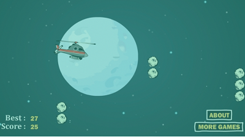
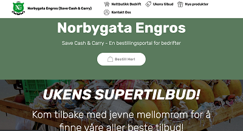
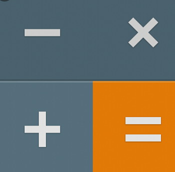

Portfolio
Helicopter Rescue
Helicopter rescue 1 is a game I made for a company mainly using Javascript. This Is a 9+ app and we have made a game that can be played when you are travelling or at home bored. This Is a simple game that can be played by absolutely anyone.
Norbygata Engros
I have also made a website for Norbygata Engros using a combination of HTML, CSS and Javascript. This is a website for a company named Norbygata, they import and sell food and daily products like toothbrushes and cakes. The function of this website is to make the ordering process digital and time efficient.
Simple Calculator
As the third project I made a calculator app which can be used on the phone and computer. We tried to build a simple calculator that was easy to use and access. This was time consuming project, but at the end It was all worth it. This calculator was made using C#.